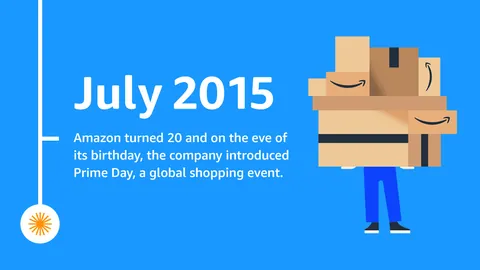

Amazon Bedding & Bath
I owned the profit and loss of Amazon’s Bedding & Bath business: sheets, towels and pillows, bought wholesale from brands. I led the negotiations with those brands and set the supply-chain terms: cost, funding, stock and how each item shipped. In 2015 I moved to Prime Now.
- P&L
- $100M+ a year
- Weekly review
- Every margin change, to a hundredth of a point
Sheets, towels and pillows, bought wholesale
I owned the profit and loss of Amazon’s Bedding & Bath business, more than $100 million a year, as a vendor manager.
Every week I had to explain each change in its margin, down to a hundredth of a percentage point. Amazon bought the goods wholesale from brands, owned the inventory, set the price and shipped the order. On each product page, Amazon’s own offer sat beside offers from independent sellers. In October 2014 Home Textiles Today, a trade magazine, placed Amazon in its top tier of online home-textile sellers, those selling $200 million to $500 million a year.
What shoppers bought
A 2011 Home Textiles Today column found pillows and plain white bedding at the top of Amazon’s bed and bath best sellers.
Cost, funding, stock and the box
I led the category’s vendor relations, contract negotiations and supply-chain optimization.
Brands funded marketing, promotions and volume rebates, which Amazon booked as a lower cost of goods. From January 2015 FedEx Ground priced every parcel by its size, so the box of a comforter became a cost to negotiate. Machine-learning forecasts sat in a vendor manager’s tools, and a vendor manager could override them with knowledge the system lacked. In 2015 Amazon renamed the program behind those forecasts Hands off the Wheel, and set goals for decisions made without people.
Holiday deals, a public dispute and Prime Day
In 2014 a third of Amazon’s revenue came in the fourth quarter, its annual report shows.
Vendor managers negotiated holiday deals with their brands. Amazon’s negotiation with the publisher Hachette was public news until the two settled on 13 November 2014. On 15 July 2015 Amazon held its first Prime Day, a one-day sale for Amazon Prime members in nine countries. Amazon said members ordered 34.4 million items, and that orders rose 266% over the same day in 2014.

The market moving online
The US Census Bureau put e-commerce at 7.3% of US retail sales in 2015. By the Bureau’s count, online retailers’ sales of furniture and home furnishings grew 23.9% that year.
From the buying desk to Prime Now
In 2015 I moved from Bedding & Bath to Prime Now, which delivered within one or two hours.
Amazon’s home textiles kept growing after I left. Home Textiles Today ranked Amazon 8th among US home-textile retailers on 2016 sales, which rose 27.1%. The magazine reported that in 2017 Amazon became the first retailer past $1 billion in online home-textile sales.